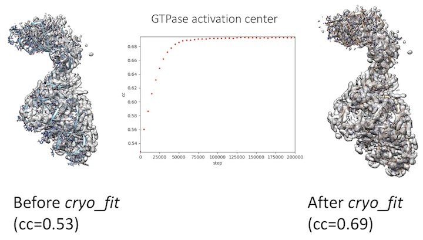

This tutorial will show you how to fit biomolecular structures into cryo-EM maps using molecular dynamics simulation with Cryo_fit under the PHENIX command-line environment.
For GUI tutorial, please see the cryo_fit_gui_tutorial.
Theoretical explanation of Cryo_fit is here.
For Cryo_fit installation, please see installation notes for cryo_fit.
<initial_model> and <target_map>
Target Map: .ccp4, .map/.mrc (MRC style binary file), or .sit (Situs style text file)
- For example, phenix.cryo_fit model.pdb map.ccp4
Command:
phenix.cryo_fit GTPase_activation_center_tutorial.pdb GTPase_activation_center_tutorial_gaussian_1p5.mrc
The "Output" folder has all the useful output files
Cryo_fit saves 3 structures with the highest correlation coefficients (CC):
- cryo_fitted_chain_recovered_cleaned_for_real_space_refine_molprobity.pdb
- extracted_<x>_ps.pdb
- extracted_<y>_ps.pdb
- cryo_fitted_chain_recovered_cleaned_for_real_space_refine_molprobity.pdb
- extracted_<x>_ps.pdb
If Cryo_fit cannot find a structure with higher CC than that of the starting model, the input PDB file will exist in the output folder.
Also, the history of the CCs between cryo_fitted structures and the cryo-EM map is stored in the "cc_record" file.
- cryo_fitted_chain_recovered_cleaned_for_real_space_refine_molprobity.pdb
- extracted_<x>_ps.pdb

Gromacs4.5.5 does not handle water molecules in structure files. Cryo_fit will remove any water from the input coordinate before starting.
Cryo_fit doesn't handle less commom monomers such as 7C4, BMA, GDP, ILX, NAG, SEP, TRX. It will simply exclude those monomers and report what are excluded.
Default options will be used if unspecified. Expert users of Gromacs may want to customize some options if needed.
| Option | Default value | Description of inputs and uses |
| emweight_multiply_by | 8 | Multiply by this number to the number of atoms for weight for cryo-EM map bias. For example, emweight = (number of atoms in gro file) x (emweight_multiply_by which is 8) The higher the weight, the stronger bias toward EM map rather than MD force field and stereochemistry preserving constraints. If user's map has a better resolution, higher value of emweight_multiply_by is recommended since map has much information. If user's map has have a worse resolution, lower value of emweight_multiply_by is recommended for more likely geometry. If CC (correlation coefficient) needs to be improved faster, higher number of emweight_multiply_by is recommended. |
| nproc | max cores | Specify number of cores for minimization and cryo_fit. If it is not specified, or max is chosen, the cryo_fit will try to use most cores automatically (up to 16) |
| number_of_steps_for_cr yo_fit | None | This is the initial number of steps for cryo_fit. Eventually, cryo_fit will increase it depending on molecule size and cc trend. For tutorial files, this will be 70,000 |
| number_of_steps_for_mi nimization | None | Specify number of steps for minimization. If this is left blank, cryo_fit will estimate it depending on molecule size.number of steps for cryo_fit. Enough minimization will prevent "blow-up" during MD simulation later. |
{{phil:cryo_fit.command_line.run}}